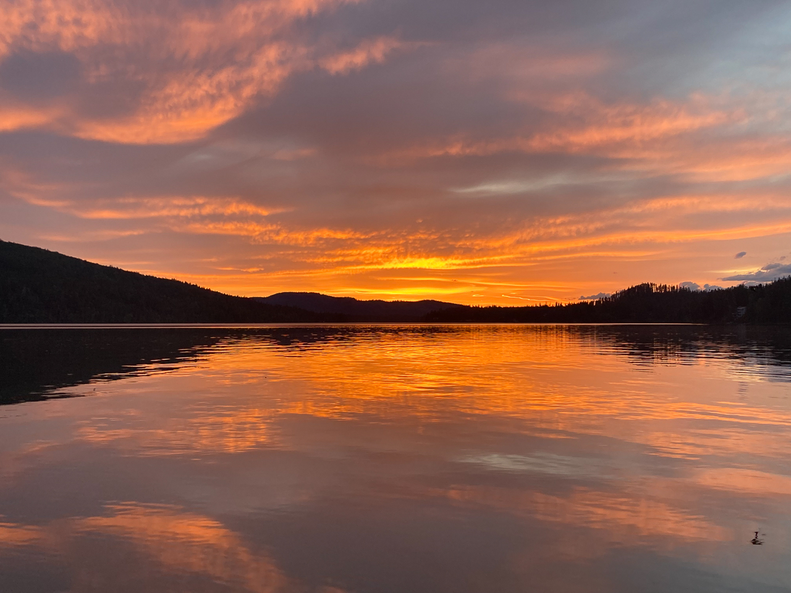
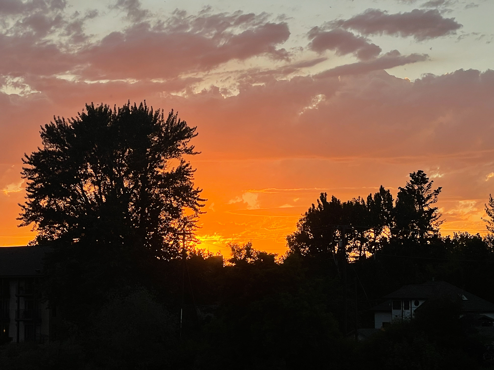

The reason orange is my favorite color is simply because I really love sunsets.

The best part about the occasion is the slow reveal from yellow light to orange light. The orange color slowly groes stronger while the luminosity of the sun seems to drain dramatically.

More sunset images Below